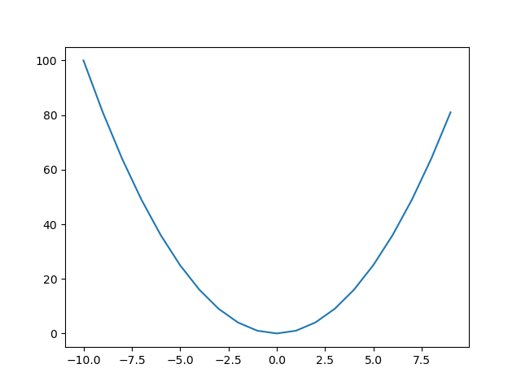

Plotting with Python
Plotting is often done with the matplotlib library.
import matplotlib.pyplot as plt
Note: in an interactive script, you would want to use plt.show() rather than plt.savefig().
Here is a simple example.
plt.plot(range(-10, 10), [x**2 for x in range(-10, 10)])
plt.savefig("xsquared.png")

You can plot more than one curve on the same plot.
plt.plot(range(-10, 10), [x**2 for x in range(-10, 10)])
plt.plot(range(-10, 10), [x**3 for x in range(-10, 10)])
plt.savefig("xsquared-and-cubed.png")